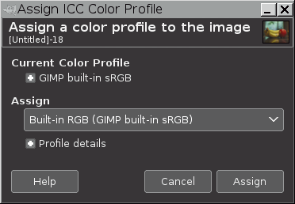
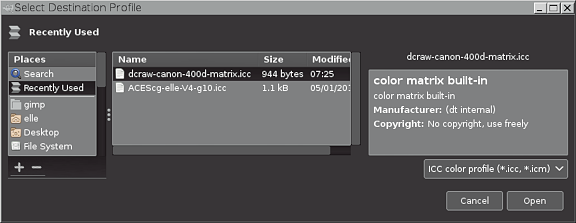
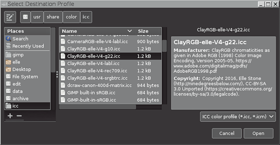
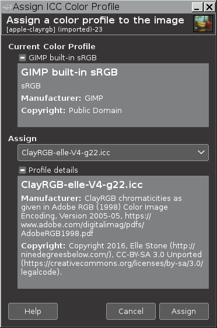
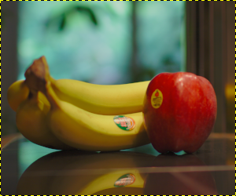
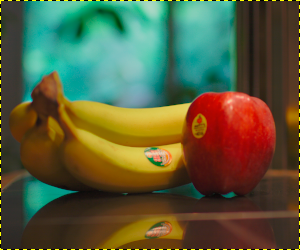

allows you to assign a new ICC profile to an image.
When importing an image from disk, sometimes you might want to assign a new ICC profile to the image:
-
The image might not have an embedded ICC profile, in which case GIMP will automatically assign one of GIMP's built-in sRGB profiles:
-
If the image really is an sRGB image, then no further action is required.
-
If the image is not an sRGB image, then use to assign the correct ICC profile from disk.
-
-
The image might have an embedded ICC profile, but maybe it's not the right profile for the image, or maybe it's just not the profile you want assigned to the image. Use to assign another profile from disk.
-
The image might have an embedded sRGB profile, but you want to assign a GIMP built-in sRGB profile in place of the embedded sRGB profile. Or conversely, maybe the image is in GIMP's built-in sRGB color space, but you want to assign an sRGB profile from disk.
Let's say you just imported an image file that you know should be in the AdobeRGB1998 color space. But for any number of possible reasons the image doesn't have an embedded ICC profile.
In cases where the image doesn't have an embedded ICC profile, GIMP will automatically assign a built-in sRGB profile. So your AdobeRGB1998 image won't show correct colors until you assign an AdobeRGB1998-compatible ICC profile from disk. The screenshots below show the procedure:
-
Accessing → → brings up the Assign ICC Color Profile dialog shown below:

-
Under Current Color Profile is a description of the currently assigned color profile, in this case GIMP's built-in sRGB profile. Clicking on the
 icon next to the description of the
currently assigned profile displays the contents of various information
tags in the assigned ICC profile.
icon next to the description of the
currently assigned profile displays the contents of various information
tags in the assigned ICC profile.
Clicking on the
icon next to
Profile details displays the contents of various
information tags in the ICC profile that you pick to be assigned to
the image. Until you've actually picked a new profile, the
profile in the Assign box defaults to a GIMP
built-in sRGB profile.
-
Between Assign and Profile details is a drop-down box that allows you to pick a new profile. Clicking in the drop-down box brings up a list of recently used profiles (if any). If the profile which you want to use is not listed, click Select color profile from disk… at the bottom of the drop-down list.
-
Clicking on Select color profile from disk… brings up the dialog for navigating to the disk location of the profile that you want to select from disk. The box has three panels:
-
The panel on the left allows you to navigate your on-disk folder structure to the folder of your choice.
-
The center panel initially shows another list of recently used profiles.
-
If you click on one of the recently used profiles, the right panel will show informational tags that are embedded in the selected profile.

If the profile you want to select is shown in the list of recently used profiles, the profile can be directly selected from the list of recently used profiles by clicking on the Open button. However, as the desired profile isn't in the list of recently used profile, the next step is to navigate to the profile's location on disk.
-
-
As shown in the screenshot below, the left and center panels of the dialog allow you to navigate to where your ICC profiles are stored on disk, and then pick an appropriate ICC color profile (in this example, an AdobeRGB1998-compatible profile), and the right panel displays informational tags embedded in the selected profile. Click on the Open button to assign the selected profile to your image.

-
Clicking on the Open button returns you to the dialog, allowing you a chance to either assign the selected profile or else pick a new profile. Once you are sure you've picked the right profile, click on the Assign button (lower right corner), and the selected profile will be assigned to the image:

-
And now the image has been assigned an AdobeRGB1998-compatible ICC profile, and the colors are correctly displayed:
Figure 16.57. Color comparison example after assigning a profile

Upon importing this AdobeRGB1998 image, there was no embedded profile. So a GIMP built-in sRGB profile was automatically assigned.

After assigning an AdobeRGB1998-compatible profile from disk, the colors are brighter and more saturated.